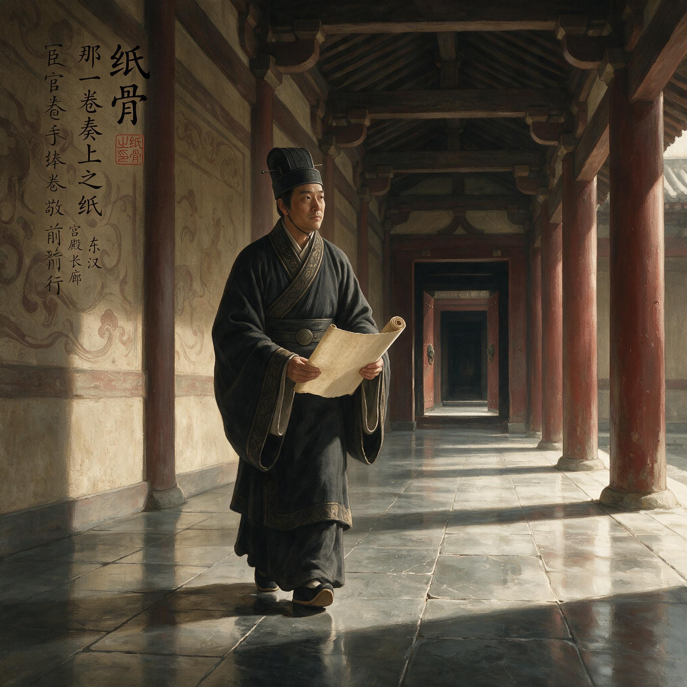

第 12 章
那一卷奏上之纸
元兴元年九月的器物清册，在尚方令署的案上已经搁了三天。册页间夹着一方新造的纸样，与三面铜镜、两方玉印、一套鎏金酒器的名目并列，像一件无足轻重的附属品。蔡伦没有直接呈递，他让少吏誊抄了这份清册，遣中黄门送入北宫——正是那夜他吹灭灯后，在月光下凝视着尚方二字时，所等待的、即将成形的东西。据《后汉书·宦者列传》记载，历代书籍文档皆以竹简为书写材料，其后虽有轻柔的缣帛问世，但缣帛造价高昂，而竹简则过于沉重。蔡伦正是针对这“简重帛贵”的困局，才想进行技术创新。
三天里，他照常监督将作院的铜器浇铸，核验织室的缣帛入库，日暮时分穿过南宫东阙的甬道回到掖庭。他什么都没做，只是等——不是等十三岁皇帝的批复，而是等邓太后的反应。

宦官手捧纸卷步入宫殿
AI 生成插图，非史实影像。
第四天清晨，北宫长秋宫的中黄门令带着随从踏入尚方令署，靴声沉而急促。蔡伦正在查阅铁官送来的生铁成色记录，抬头看见来人服色，起身整了整衣冠。
“太后召尚方令蔡伦入北宫奏对。”
没有多余的话。没有“所呈纸样已阅”之类的铺垫。但恰恰是没有铺垫，蔡伦知道纸样已经送到了该送的地方。
他跟着中黄门令穿过南宫与北宫之间的复道。元兴元年秋天的风从北边灌进来，带着将作院鼓风炉的铁腥气。这气味他太熟悉了——耒阳铁官署的冶铸场，尚方工坊的锻造间，他这辈子有一半时间活在铁与火的气味里。另一半时间活在另一种气味里：竹简的霉味、缣帛的浆味、墨的松烟味。
纸的出现让这两种气味忽然有了交集。铁官的捶打工艺被他迁移到纤维处理上，石臼舂捣的动作逻辑与锻铁如出一辙：反复击打，破坏原有结构，让不同的材质在力的作用下融合成新的东西。他在尚方工坊的石臼房里做了将近两年的试验，从麻皮到旧布，从渔网到楮树皮，最后发现混舂才是关键——不同纤维在舂捣中互相纠缠，形成一种他称之为“骨”的支撑结构。没有这种骨，纸浆在竹帘上沥水后就是一团松散的东西，干了会裂，湿了会烂。有了骨，它才能成为一张可以独立存在的薄片。
这就是纸骨。他在呈文中用了这个词。
北宫长秋宫的偏殿里，邓太后坐在帘后。蔡伦跪伏行礼，额头触到冰凉的砖面时，听见帘后传来纸张翻动的声音——不是竹简碰撞的哗啦声，不是缣帛展开的窸窣声，而是他呈上的那卷纸被一页一页翻开时发出的轻而脆的声响。这声音他自己在工坊里听过无数次，但此刻在这座殿堂里响起，却像某种陌生的语言正在被一个掌握生杀大权的人破译。
“蔡尚方。”邓太后的声音从帘后传来，不徐不疾，“你这纸，是用什么做的？”
“禀太后，以树皮、麻头、破布、旧渔网为原料，经浸沤、切碎、舂捣、打浆、抄造、压榨、晾干诸工序而成。”
“树皮？”帘后的声音顿了一下，“什么树的皮？”
“楮树皮为主，辅以桑皮。楮树皮纤维长而韧，桑皮纤维细而匀，二者混舂，可得骨力。”
“骨力。”邓太后重复了这两个字。蔡伦听不出她的语气里是赞赏还是审视。帘后沉默了片刻，纸页翻动的声音又响了一次，然后停了。
“你这呈文上说，纸的造价不及缣帛十分之一，轻便胜过竹简十倍。可有实据？”
“禀太后，尚方工坊已制纸三百余张，尺寸、厚薄、色泽各有不同。臣已命人将同字数之竹简、缣帛与纸分别称重、计费，造册备查。太后若允，臣即刻呈上。”
帘后没有立刻回应。蔡伦感觉到偏殿里还有别人——左侧的阴影里站着两个身影，从服色看，一个是少府的某位丞，另一个腰间佩着尚书台的铜印绶带。这两个人一直没有出声，但他们的存在本身就是一种压力。少府管着尚方令署的钱粮拨付，尚书台管着奏章文书的流转程序。纸要成为官方承认的书写材料，光有太后的兴趣不够，还得过这两道关。
“呈上来。”邓太后说。
蔡伦从袖中取出早已备好的细目册，双手举过头顶。中黄门接过，转入帘后。册页被打开的声音响起，然后是长时间的静默。那静默里，他忽然意识到一个事实：邓太后不是在读他的呈文，她是在算。她在算纸的成本与缣帛的成本之间的差额，在算竹简的运输重量与纸的运输重量之间的倍数，在算如果各郡县官署的文书都用纸来抄写，一年能省下多少匹缣帛、多少辆运简的牛车。
这不是一个后宫女性对工艺的好奇。这是一个执政者在计算行政成本。
蔡伦跪在砖地上，膝盖开始发麻，但他没有动。他知道这一刻的重量。过去两年里他在石臼房里反复试验的那些夜晚，那些被碱水泡烂的手指，那些失败后堆在墙角像烂叶子的废纸浆，那些被中黄门暗中监视时脊背发凉的瞬间——所有这些都汇聚到了这一刻。
但这一刻并不完全属于他。他只是一个尚方令，一个宦官，一个没有后代、没有家族、没有任何独立政治根基的人。他能站在这里，是因为邓太后需要他站在这里。而邓太后需要他，是因为他有用。
有用。这两个字贯穿了他的一生。在耒阳铁官署，他学会的是手艺的有用——能打出好铁、能铸出好器，就能在铁官场里站住脚。入宫之后，他学会的是另一种有用——能识字、能算账、能管理工坊、能替主子分忧，就能在后宫的秩序里活下去。现在他站在北宫的偏殿里，手里捧着一卷纸，他忽然明白，这卷纸的有用性必须被证明，而且必须由他来证明。没有人会替他证明。如果纸被认为无用，或者被认为有用但成本不够低、工艺不够成熟、推广不够方便，那他过去两年的心血就只是一堆废纸浆，而他本人也将从“有用的尚方令”变回“一个可以被替换的宦官”。
“蔡尚方。”邓太后的声音再次响起，“你这纸，能写字吗？”
“能。”
“用墨写？用漆写？”
“墨可写，漆亦可写。纸面经砑光处理后，墨不洇散，漆不渗透。”
“砑光？”帘后传来一个陌生的词，带着疑问上扬的尾音。
“以光滑石块反复碾磨纸面，使纤维紧实，表面平滑，谓之砑光。”
帘后又沉默了。这一次的沉默比上一次更短，但蔡伦感觉到某种东西变了。邓太后的下一个问题不是关于工艺的。
“你这呈文上说，纸可替代竹简与缣帛，为天下书写之资。你可知道，此言若行，将牵动多少？”
蔡伦的脊背微微绷紧。他当然知道。竹简的供应涉及竹林的种植与采伐、简牍的制作与运输，这是一条养活了许多人的产业链。缣帛的供应涉及蚕桑、缫丝、织造，背后是遍布各郡的织室与桑田。纸如果取代了竹简和缣帛，这些产业就会萎缩，依赖这些产业的人就会失去生计。而更重要的是，竹简和缣帛的分配与流通早已嵌入朝廷的行政体系与礼仪制度之中——什么样的文书用竹简，什么样的文书用缣帛，什么样的场合用什么样的书写材料，都有成规。纸要挤进这个体系，不是技术好就可以的。
“臣知道。”蔡伦说，声音平稳，“故此臣不敢言‘取代’，只言‘补充’。纸之利，在于补竹简之重、缣帛之贵。竹简仍可用于需要长期保存的典章律令，缣帛仍可用于祭祀盟誓等大礼。纸则用于日常文书、奏章副本、郡县上报材料等用量大而无需久存之处。三者并行，各取其长。”
这是他在呈文中精心设计的措辞。他不说“替代”，他说“补充”。他不挑战现有的书写材料秩序，他只是在现有秩序的缝隙里塞进一种新的选项。这不是技术上的妥协，这是政治上的生存策略。他太清楚一个宦官提出的任何革新都会被人从动机上质疑——如果他胆敢宣称纸可以取代一切，明天就会有人上疏弹劾他“妄改旧制、居心叵测”。但他说“补充”，就把自己放在了一个安全的位置：他只是提供了一种额外的选择，用不用、怎么用，由朝廷决定。
帘后的邓太后似乎对这个回答感到满意。她问了一个更具体的问题：“你说纸可批量制作，尚方工坊现有工匠几人？日产量几何？”
“禀太后，尚方工坊现有造纸工匠十二人，以现有工艺，日可出纸二百张。若增工匠至三十人，改良水碓舂捣以替人力，日产量可增至五百张。”
“水碓？”
“以水力驱动碓杵舂捣纸浆，较人力舂捣更为均匀持久，且可昼夜不息。臣已在尚方工坊外洛水支流处选址，若得允准，年内可建成水碓房。”
帘后传来轻微的声响，像是邓太后在移动身体。然后她说了一句蔡伦没有预料到的话：“此事交由少府核议。蔡尚方，你且退下，等候诏命。”
少府核议。
蔡伦行礼退出偏殿时，目光扫过左侧阴影里那两个人的脸。少府丞的脸上没有表情，但嘴角有一条极细的纹路向下撇着——那是某种不以为然。尚书台的那个人则根本不看他，目光垂在鼻尖，像是在数砖地上的缝隙。蔡伦认识这种表情。他在宫中十五年，见过太多这样的脸。这不是反对，也不是赞成，这是等待。他们在等风向。如果太后明确支持纸，他们会跟进；如果太后犹豫，他们会提出各种程序上的质疑——工艺是否成熟、成本核算是否准确、推广是否具备条件、旧有书写材料如何处置——这些质疑每一个单独拿出来都合情合理，堆在一起就能让一件事无限期搁置。
蔡伦回到尚方令署时，日头已经偏西。他在署中坐了片刻，没有去工坊，而是让人把石臼房里最近一批纸样取来。纸样摊在案上，一共十二张，从最初那种粗糙发黄的麻皮纸到最近那种米白色的楮皮纸，按照制作时间排列，像一条从粗糙到精细的进化链。他一张一张地看过去，手指抚过纸面，感受纤维的纹理。楮皮纸已经足够好了——轻薄、柔韧、吸墨均匀，成本不到缣帛的十分之一。但他知道这还不够。
他想起了邓太后问的那句话：“你可知道，此言若行，将牵动多少？”
他知道。他比任何人都知道。因为他是从底层爬上来的。他在耒阳见过铁官冶铸场的工匠怎么在炉火前度过整个夏天——皮肤被烤得开裂，汗水滴在铁砧上发出嘶嘶的声响。他在尚方工坊见过织室的妇人怎么在织机前一坐就是一整天——腰背佝偻，手指被丝线勒出深沟。他知道竹简从伐竹到成简要经过多少道工序，知道缣帛从养蚕到织成要耗费多少人力。纸如果能普及，这些人的劳作方式都会改变。有些人会失去旧有的生计，有些人会获得新的生计。他不是不知道这种变革的重量。
但他也知道另一件事：如果纸不普及，书写就永远被束缚在竹简的笨重和缣帛的昂贵之中。太学里的博士们要抄一部经书得用掉好几车竹简；郡县上报的文书在驿路上颠簸，竹简的编绳断裂、简片散落，到了尚书台得重新编排。这些事他在尚方令任上见得太多，多到他已经无法假装看不见。
但这一切的前提是：纸必须先被官方承认。
三天后，诏命下来了。不是直接下给尚方令署，而是通过少府转达。少府的公文写得四平八稳：“尚方令蔡伦所呈造纸之法，经核议，工艺可行，造价低廉，着令尚方工坊扩大造纸规模，并择郡县适宜处推广试制。所出纸张，先供尚书台及东观校书试用，以观成效。”汉和帝元兴元年（105年），蔡伦把改进造纸术的成果报告给皇帝，皇帝对蔡伦的才能非常赞赏，并把改进过的造纸技术向各地推广。
以观成效。这四个字是整道诏命里最重要的四个字。它意味着纸还没有被正式接纳为官方书写材料，只是进入了试用阶段。试用成功了才能转正；试用失败了，一切归零。而试用成功与否的标准不在蔡伦手里——在尚书台和东观那些用纸的人手里。
蔡伦接到诏命时正在石臼房里检查新一批楮皮纸的砑光效果。他读完公文，把它折好放进袖中，继续检查纸面。工匠们看着他，等着他说些什么。他什么都没说。他拿起一张刚砑光过的纸对着窗户的光看它的透光均匀度，然后用手指在纸角轻轻一弹——纸发出清脆的颤音，像某种金属薄片被敲击时的声响。这是好纸的标志：纤维分布均匀，骨力充足，纸面紧实而不僵硬。
“这批纸送尚书台。”他说。
工匠们应了一声继续干活。蔡伦走出石臼房站在院子里。秋天的阳光已经不那么猛烈了，照在身上温温的。他抬头看北宫的方向，只能看见宫殿的屋脊——灰色的瓦片在阳光下泛着淡青色的光泽。他知道邓太后在那些屋脊后面正在批阅奏章、正在平衡各方势力、正在替十三岁的皇帝守住这个帝国。他也知道自己现在和邓太后之间有了某种联系——纸就是这种联系的物证。但这联系有多牢固？他不知道。他只知道从这一刻起，他的命运和纸的命运绑在了一起：纸被接纳他就被接纳；纸被否定他就被否定。而纸的命运，现在取决于尚书台和东观的那些士大夫。
蔡伦回到令署，让人把少府的公文抄录了一份自己留底。抄录用的纸就是尚方工坊自产的楮皮纸——墨落在纸面上不洇不散，笔画清晰。他看了一会儿这份抄件，忽然意识到一件事：这是第一份写在纸上的官方文书。不是试验品，不是样品，而是真正在行政流程中使用的文书。虽然只是一份抄件，但它的存在本身就意味着某种东西已经开始改变了。
他把这份抄件收好，然后坐下来开始写另一份呈文。这份呈文不是给少府的，是直接给邓太后的。他在呈文中详细列出了造纸工艺的每一个环节：从原料采集到成品检验，每一步都附上了工时、用料、成本的数据。他写得很细，细到每一个数字都可以被核查。他知道会有人核查的——少府会核查，尚书台会核查，甚至可能会有御史来核查——他必须让每一个数字都站得住脚。
但他写这份呈文的目的不只是为了应对核查。他还有一个更深层的意图：他要让邓太后看到，造纸不是一时兴起的奇技淫巧，而是一套可以被标准化、被复制、被推广的生产体系。原料可以从各地采集，工艺可以传授给各郡县的工匠，水碓可以在有河流的地方建造。纸的生产不需要依赖宫廷工坊的特殊资源——它可以被分散到帝国的各个角落。这意味着纸的推广不只是一个技术问题，它是一个行政问题。而行政问题，正是邓太后最关心的问题。
呈文写到一半，他停下了笔。他想起了刘珍。
东观校书郎刘珍是邓太后一手提拔的文学侍从，正在主持东观校书工程——那项工程的目标是校订天下典籍、抄写定本、藏于东观。这项工程需要的书写材料量极大：如果继续用竹简，搬运和存储都是巨大的负担；如果用缣帛，费用高到难以持续。纸如果能进入东观，成为校书的正式用纸，就等于在士大夫群体中获得了最高级别的认可。
但刘珍会接受纸吗？蔡伦没见过刘珍本人，但他听说过东观校书的规矩：那些校书郎们对书写材料极为挑剔——竹简要刮去青皮打磨光滑不能有毛刺；缣帛要经纬细密不能有跳纱；他们用的墨是上好的松烟墨，磨出来的墨汁浓黑发亮。纸要进入这样的场合，光便宜不够，光轻便也不够——它必须好写。必须让那些校书郎们在落笔的瞬间，感受到墨在纸面上行走时的阻力恰到好处：不太滑不太涩，笔锋能够自如地转折顿挫。
蔡伦重新拿起笔，在呈文的末尾加了一段：他请求邓太后允准，将尚方工坊最新制成的楮皮纸样送东观供校书郎试用。他没有说“请东观采用”——他说的是“试用”。又是这两个字。他知道自己必须保持这个姿态：不争不抢，只是提供，让用的人自己判断。
写完呈文，他让少吏送去北宫。然后他站起来走到令署门口，看着院子里那棵老槐树。槐树的叶子已经黄了大半，风一吹就簌簌地落。他忽然想起了耒阳——铁官署门口也有一棵槐树，比这棵小得多，但每年秋天也一样落叶。他离开耒阳那年才十三岁，入宫的缘由他已经很少去想了——不是因为忘了，而是因为想也没用。一个宦官不能有故乡。故乡是正常人的奢侈品，是有家族有后代有宗祠的人才能拥有的东西。宦官什么都没有。宦官只有现在，只有此刻，只有手头正在做的事和正在侍奉的人。
纸是他手头正在做的事。邓太后是他正在侍奉的人。这两件事现在合在了一起，变成了一件事：他必须让纸成功。不是为自己——一个宦官没有“自己”这个概念——而是因为这是他唯一能做的事，唯一能证明他存在过的事。
三天后，邓太后的批复到了。批复很短，只有八个字：“纸样送东观。善为之。”
善为之。蔡伦看着这三个字，心里涌起一种复杂的感受。邓太后没有说“准”——她说“善为之”。好好地做。这不是命令，这是期待。期待比命令更重：命令是你要完成的任务；期待是你必须达到的标准。任务可以交差；标准没有尽头。
他把批复收好，然后亲自去石臼房挑选送东观的纸样。他在几百张纸里一张一张地挑，淘汰掉任何有瑕疵的：纸面不够平滑的不要，厚薄不均的不要，边缘有毛边的不要，颜色不够白的不要。最后他挑出了五十张——每一张都经过砑光处理，纸面平滑如镜，色泽温润如象牙。他把这五十张纸用细麻绳捆好，装进一个木匣，木匣外面裹上一层防潮的油布。然后他坐下来，写了一封给刘珍的信。
信很短，语气恭敬但不卑微：尚方工坊新制楮皮纸，奉太后命送东观试用，请校书郎不吝赐教，将试用效果告知尚方，以便改进。他没有说“请采用”——他说“请赐教”。又是那种姿态：把自己放低，把选择权交给对方。信写完，他封好，连同木匣一起交给少吏，吩咐他明日一早送往东观。
做完这一切，天已经黑了。蔡伦坐在令署里，没有点灯。黑暗里他闻到了纸的气味——那是楮树皮纤维经过浸沤和舂捣后留下的一种淡淡的草木气息，混杂着石臼房里碱水的微涩。这气味和铁的气味不一样：铁的气味是热的，烈的，带着火和力的痕迹；纸的气味是冷的，柔的，带着水和时间的痕迹。但它们在本质上是一样的——都是某种东西被反复击打、被彻底改变之后，重新组合成新的形态。
他就是那个被反复击打、被彻底改变之后重新组合的人。铁官家庭的出身给了他捶打的技艺；尚方令的职位给了他整合资源的权力；宦官的身份给了他接近皇权的通道。这三重条件缺一不可：如果他没有在耒阳铁官署学过捶打淬炼，他不会想到用同样的逻辑去处理植物纤维；如果他没有当上尚方令，他不会有工匠有场地有资金去做两年的试验；如果他不是宦官，他没有机会直接向邓太后呈递纸样，没有能力在宫廷的权力结构中找到庇护。
但同样的三重条件也把他锁死在了一个位置上。他的一切成就都依附于皇权——纸被认可是因为邓太后认可；纸被推广是因为朝廷下令推广。他不是独立的发明家，他是皇帝的家奴。他的功业不属于自己，属于他侍奉的主子。这是他从入宫那天起就签下的契约：不可更改，不可撕毁。现在这份契约上又多了一条条款，那条条款用纸写成。
几日后，刘珍的回信到了。信写在竹简上。蔡伦展开竹简时心里沉了一下——刘珍用竹简回信，这本身就是一个信号。但读下去之后，他的心情放松了：刘珍的信写得很客气，说纸样已经收到，质地轻薄，着墨良好，东观校书郎试写后认为“可为抄录副本之用”。但刘珍也提出了几个问题：纸的耐久性如何？能否经受多次翻阅而不破损？长期存放是否会生虫蛀蚀？墨迹在纸上多年后是否会褪色？
这些问题每一个都问到了点子上。蔡伦读完之后把竹简卷好放在案上。他知道刘珍不是在刁难他——这些问题都是校书郎必须考虑的实际问题：东观校书的目的就是制作可以传世的定本，如果纸做的定本几十年后就破损虫蛀，那校书工程就白费了。
但这些问题他目前无法全部回答。耐久性需要时间来验证；防虫需要试验不同的处理方法；墨迹的持久性取决于纸与墨的化学反应——他在尚方工坊可以做这些试验，但那需要时间，可能需要好几年。他没有那么多时间。邓太后的耐心不会持续那么久，尚书台和少府里那些等着看他失败的人也不会等那么久。
蔡伦坐在案前盯着刘珍的竹简看了很久，然后站起来走到石臼房。工匠们已经收工了，石臼房里只有水碓的余音——那是从洛水支流引来的水流冲击木轮时发出的低沉声响。他点亮一盏油灯，在昏黄的光里看着那些石臼和竹帘，看着墙角堆放的原料：楮树皮、麻头、旧布、渔网，分类码放，整整齐齐。
耐久性。防虫。墨迹持久。这三个问题像三根刺扎在他的脑子里。他可以在工艺上继续改进：把纸浆舂得更细，让纤维结合得更紧密，提高纸的密度，这样纸就更耐翻阅；他可以在纸浆里加入防虫的草药——黄柏、花椒、芸香，这些药材在宫中都有储备，用来防虫蛀蚀衣物和书籍；他可以在纸面上再施一层薄胶，让墨迹更好地固着在纤维上。但这些改进都需要试验，而试验需要时间。
他忽然想起了邓太后说过的那句话：“让人无法说不。”他当时在黑暗中坐起来，脑子里冒出一个念头：如果他能做出一张比缣帛更白、比竹简更轻、比任何一种现有的书写材料都更便宜更容易制作的纸，那他就真的做到了让人无法说不。
现在他离那个目标还差一步。纸已经足够轻、足够便宜、足够容易制作了，但它还不够白——楮皮纸是米白色的，麻皮纸是灰白色的，旧布纸是褐白色的。它们都能着墨，都能承载文字，但它们的颜色本身就是一种局限：缣帛是白的，那种白是蚕丝天然的光泽经过漂练之后更加莹润；竹简刮去青皮之后是淡黄色的，虽然不比纸白，但竹简的厚重感本身就是一种庄严。纸介于两者之间，既不白得耀眼，也不黄得温润——它在视觉上没有冲击力。
而视觉在宫廷里本身就是一种权力。邓太后第一次看到纸样时，她的第一反应不是“这纸能写字吗”，而是——蔡伦后来才从长秋宫的宫人那里听说——她拿着纸样对着光看了很久，说了一句：“此物之色尚欠。”
尚欠。还不够。
蔡伦站在石臼房里，油灯的火苗在夜风中微微晃动，他盯着墙上自己投下的影子，脑子里反复转着那个念头：怎么让纸变白？石灰？草木灰？还是别的什么？他知道漂白是可能的——缣帛的漂练用的是草木灰和日光，反复浸泡曝晒能让丝帛从淡黄变成纯白——但纸不是缣帛：纸的纤维在漂白过程中会不会受损？纸的骨力会不会因为漂白而减弱？这些问题他一个都回答不了，但他知道他必须回答。
因为纸已经不只是纸了。它是一份奏章，一份契约，一次自证，一个宦官在帝国权力结构里为自己撬开的一道缝隙——这道缝隙能不能变成一扇门，取决于他能不能做出让人无法说不的东西。
他吹灭油灯，走出石臼房。夜色很浓，北宫的屋脊在黑暗中只剩下一个模糊的轮廓。蔡伦站在院子里抬头看了那轮廓很久，然后转身走回住处。他走得很慢，脚步落在石板上的声音轻而均匀，像某种持续不断的击打——不是铁锤落在铁砧上的那种猛烈撞击，而是石臼里木杵一下一下舂捣纤维的那种沉闷而持久的节奏。这种节奏他已经听了两年，还会继续听下去，直到纸变白的那一天，或者直到他再也没有机会走进石臼房的那一天。
他不知道哪一天会先来。
汉和帝元兴元年那卷奏上之纸被朝廷接纳的消息传开之后，尚方令署的门槛几乎被踏平了半个月——各郡县派来询问造纸工艺的吏员、太学里想要索取纸样的博士、少府派来核算成本的计吏络绎不绝。蔡伦一一应对，把工艺流程写成详细的图册分发下去，把纸样按不同规格分类装订成册供人取阅，把成本核算的数据摊在案上任人核查。他没有藏私，也没有居功，只是按部就班地做他该做的事，仿佛这一切不过是尚方令职责范围内的寻常事务。
但他的平静只是表面。每天晚上，当他独自坐在令署里翻看各郡县反馈回来的试用报告时，那些字里行间隐藏的信息就会浮上来，比墨迹更清晰，比纸面更沉重：有的郡县说纸张好用，但本地没有楮树，不知道能不能用别的树皮替代；有的郡县说工匠学会了抄造工艺，但造出来的纸质脆易裂，不知道哪里出了错；还有的郡县说试用效果良好，但郡守迟迟不肯拨付扩建水碓的钱粮，因为“此事未见明诏，不敢擅动”。
这些问题每一个都不只是技术问题。没有楮树的郡县需要的是原料替代方案，而这需要新的试验，新的时间；工匠学不会工艺是因为尚方工坊的培训方式不适用于各地参差不齐的手艺基础，而这需要建立一套标准化的传授体系；郡守不肯拨钱是因为少府的公文只说“推广试制”，没说“必须推广”——“试”字给了地方官推诿的空间，而“必须”才是真正的行政命令。
蔡伦把这些报告一份一份读完，然后分类归档，在每一份报告下面附上自己的处理意见：原料替代方案建议试用当地常见的韧皮植物如构树、桑树、青檀；培训问题建议在各郡设立造纸作坊，由尚方派出工匠驻场指导半年；钱粮拨付问题建议少府下发明确指令，将造纸推广纳入郡县年度考课。这些建议每一条都合情合理，每一条都有数据支撑，每一条都写得恭谨克制，不越权，不冒进，不给人留下任何把柄。
但他知道这些建议递上去之后会遭遇什么。少府会说他越权——造纸推广是少府的职权范围，尚方令只负责工艺改进，不该插手行政调度；尚书台会说他不合程序——郡县考课事项须经尚书台审核，不能由尚方令直接建议；至于那些等着看他失败的对手，他们会把这些建议逐条拆解，逐条质疑，然后得出一个结论：蔡伦贪功冒进，妄图以一纸之工艺撬动朝廷之制度，居心叵测。
这些话还没有人说出口，但蔡伦已经听到了——在少府丞嘴角那条向下撇的细纹里，在尚书台那个人垂目数砖缝的姿态里，在中黄门转述北宫消息时偶尔露出的欲言又止里。他知道风暴正在聚集。但他更知道一件事：现在退就是死。如果他在这个时候停下来，等少府慢慢核议，等尚书台慢慢走程序，等各郡县慢慢观望，那造纸推广这件事就会像无数曾经被提出又被搁置的革新建议一样慢慢烂掉——没有人反对，但也没有人推进，所有人都等着别人先迈出第一步，而第一步永远不会被迈出，因为没有人愿意承担第一步的风险。
所以他不能退。他只能往前走，而且要走得更快，更稳，更让人无法质疑。
第二天一早，蔡伦把整理好的试用报告连同自己的处理意见装订成册，亲自送去了少府——不是通过少吏转呈，而是亲自去。他要亲眼看着少府丞接过这份册子，亲口告诉他这是奉太后命推广造纸所需之材料，请少府尽快核议。
少府丞接过册子时，脸上的表情和那天在偏殿里一模一样：嘴角那条细纹向下撇着，眼神平淡，看不出任何情绪波动。但他接过册子的动作很慢，慢到蔡伦能感觉到那只手在刻意控制着力道，仿佛手里拿的不是一叠纸，而是一件随时可能炸开的危险器物。
“蔡尚方辛苦了。”少府丞说，语气客套而冷淡，“此事少府自当核议，不过你也知道，核议需要时日，各地钱粮调度牵涉甚广，不是一两份报告就能定下来的。”
蔡伦看着他，点了点头：“下官明白。只是太后那边也在等消息，所以斗胆请少府优先处置。”
他把“太后”两个字说得很轻，不像是施压，像只是在陈述一个事实。但少府丞的眼角跳了一下，极细微的一下，随即恢复了平静。
“自然。”少府丞说，“太后关切之事，少府不敢怠慢。”
蔡伦行礼退出少府，走在回尚方令署的路上，忽然意识到自己刚才做了一件他入宫十五年来从未做过的事：他拿太后的名义向少府施了压。这不是他的风格。他一贯的策略是低调、克制、不与人正面冲突，把自己藏在制度和程序的缝隙里，让别人替他出头——以前替他出头的是皇帝，现在是邓太后，但他从来只是被动地接受庇护，从来没有主动地使用这份庇护来推动一件事。
刚才他主动了。这意味着什么？意味着他已经不再只是一个等待庇护的人，他开始利用庇护来达成自己的目的。而这恰恰是宫廷政治中最危险的行为之一：当你开始主动使用权力的时候，你就从工具变成了玩家。而从工具变成玩家，意味着你将不再是任何人眼中“安全”的存在。
蔡伦回到尚方令署时手心是湿的，但他没有停下脚步，径直走进了石臼房，对着正在舂捣纸浆的工匠们说了一句话：“从今天起，楮皮纸的漂白试验正式开始。所有人都要参与。”
工匠们停下手中的活，看着他，等他说下去。
“我要你们试三种方法。”蔡伦说，声音平稳得像在念一份工艺清单，“第一组用石灰水浸泡纸浆，浸泡时间分三个梯度——半日、一日、三日；第二组用草木灰水浸泡，同样分三个梯度；第三组将纸浆铺在日光下反复曝晒淋水再曝晒，模仿缣帛漂练之法。每组每梯度各制十张纸样，记录原料配比、浸泡时长、纸面变化、骨力增减，每三日汇总一次交给我。”
工匠们应声称是，各自领了任务开始忙碌。蔡伦站在石臼房里看着他们，忽然想起了一个人——他的父亲。确切地说，不是他的父亲，而是他父亲的手。那双在耒阳铁官署的冶铸场里握了一辈子铁锤的手，手指粗短，关节突出，掌心全是老茧，虎口处有一道被铁水烫伤的疤痕，形状像一片枯叶。他小时候最怕看那双手，因为那双手打起人来很疼。但后来他最常想起的也是那双手，因为那双手教会了他一件事：什么东西都可以被反复击打，直到变成你想要的样子。
铁可以被击打成刀剑、甲胄、农具；纤维可以被击打成纸浆、纸张、书页；人也可以被击打——被命运击打，被制度击打，被身份击打——直到变成某种能够在这种击打中存活下来的形态。
他就是那个被反复击打之后存活下来的人。而他现在正在用同样的逻辑击打那些楮树皮纤维，试图让它们变成一种更白、更纯粹、更能让人无法拒绝的东西。这就是纸骨的意义——不只是纤维的骨架，也是他的骨架，是一个宦官在帝国权力结构的挤压中为自己撑开的那一点点空间，那一点点不被压碎的坚韧，那一点点证明自己存在过的痕迹。
接下来的半个月，石臼房里弥漫着石灰水和草木灰水的气味，刺鼻而潮湿。工匠们按照蔡伦设定的方案一批一批地制作漂白纸样，每一批都详细记录数据，每一批都编号归档，每一批都送到蔡伦案前由他亲自检验比对。
结果并不理想。石灰水漂白的纸样白度确实提高了，但纤维受损严重，纸的骨力下降了将近一半——这样的纸虽然白，却不能承受多次翻折，一折就裂，一裂就碎，等于废纸。草木灰水漂白的效果更温和，骨力损失较小，但白度提升有限，最好的样品也只是从米白变成了浅米白，离缣帛那种莹润的白还差得远。日光曝晒漂白的效果最差，几乎看不出明显变化，而且耗时极长，一批纸浆要在日光下反复曝晒淋水半个月才能勉强变浅一个色阶——这个速度根本无法满足批量生产的需求。
蔡伦把三组数据摊在案上对比了很久，最后得出了一个结论：单用一种方法不行，得混用。石灰水漂白力度太强伤骨但速度快；草木灰水漂白力度温和保骨但效果弱；日光曝晒保骨保色但耗时太长——如果把这三种方法按照一定的顺序组合起来，能不能取各自之长补各自之短？
他拿起笔，在纸上画了一道工艺流程：先用草木灰水浸泡一日，去除纤维表面的杂质和色素，同时保持骨力基本不损；然后用稀释的石灰水短时间浸泡——只浸半个时辰——适度提升白度，但不让纤维过度受损；最后将纸浆铺在日光下曝晒三日，让残留的灰分和石灰成分在光照下进一步分解，同时让纤维自然收紧，增强骨力。
这只是一种假设，没有经过试验验证，但他有一种直觉：这道流程的逻辑是对的，因为它在每一步都留了余地——草木灰水温和去杂质，石灰水短时间提白，日光曝晒自然收紧——每一步都不做到极致，每一步都给下一步留出空间，每一步都让纤维有时间适应、有时间恢复、有时间重新组织自己。就像他这些年在宫里的生存方式一样：不做到极致，不留把柄，每一步都留余地，每一步都给下一步留退路，每一步都让对手有时间松懈、有时间犯错、有时间暴露自己。
他把这道新流程交给工匠，让他们按照这个方案重新制样，然后自己坐在石臼房里，看着那些石臼和竹帘，看着那些浸泡中的楮树皮纤维在水里缓缓膨胀、缓缓舒展、缓缓释放出一种淡淡的草木气息。他忽然觉得这些纤维和他很像——都是被浸泡、被舂捣、被碾压、被晾晒的东西，都是在失去了原本的形态之后变成另一种更坚韧、更持久、更能承载重量的东西。
但他没有把这个念头说出来，也没有把它写进呈文里。他只是把它放在心里，像放一块砑光石在纸面上反复碾磨，直到它变得平滑紧实，不再刺手，不再外露，不再让人觉得危险。
新流程的第一批纸样七天后出来了。蔡伦拿起一张对着光看——纸面的颜色比之前的楮皮纸白了将近两个色阶，虽然还没有达到缣帛那种莹润的白，但已经不再是米白色，而是接近一种淡象牙白，带着微微的暖意，不刺眼，不冷硬，看起来温润而有质感，就像一块被反复打磨过的玉器表面，虽然还留着细微的纹理，但整体已经呈现出一种内敛的光泽。
他把这张纸放在案上，与缣帛并列对比。缣帛的白是蚕丝天然的光泽经过漂练之后更加莹润，但那是一种冷白，带着丝质特有的反光，看起来高贵但拒人千里；而这张纸的白是一种暖白，带着植物纤维特有的柔和质感，看起来温润而亲近，适合长时间阅读，不伤眼睛，不显张扬。
他忽然意识到一件事：这种白也许比缣帛的白更适合书写。因为书写不是为了炫耀材料的高贵，而是为了让文字本身被看见——太白的底会抢走文字的存在感，就像太亮的灯会让人看不清灯下的东西；而微微泛暖的白会让墨迹更加凸显，让阅读者的注意力集中在文字上，而不是在承载文字的载体上。这就是他要的白——不是为了和缣帛比高贵，而是为了让文字更好地存在。
他把这张纸样连同漂白工艺的记录一起装订成册，又写了一封简短的呈文，说明新工艺的原理和效果，请求邓太后允准将这批漂白楮皮纸再次送东观试用，以验证其书写性能是否达到校书要求。呈文送出去之后，他没有等在北宫的回复，而是继续待在石臼房里，盯着工匠们按照新流程制作第二批、第三批漂白纸样。他要确保这种工艺是可重复的，不是偶然的成功，不是一次性的运气，而是可以被标准化、被推广、被复制的生产体系——就像他之前在呈文中向邓太后承诺的那样，造纸不是奇技淫巧，而是一套可以被帝国行政体系吸纳的技术制度。
第二批纸样出来了，白度和第一批一致；第三批也一致；第四批因为原料批次略有差异，白度稍有波动，但在可接受范围内。他调整了草木灰水的浓度，把波动控制在了一个很小的区间里，然后把调整后的配方写进了工艺手册。
工艺手册越来越厚了——从最初几页简单的工序记录，到现在已经积累了数十页，包括原料选取标准、浸泡时长控制、舂捣力度分级、抄造手法要领、砑光力度均匀度检验、漂白配方比例，以及每一道工序中常见问题的排查方法和解决方案。这已经不是一份简单的工艺说明，而是一套完整的生产技术体系，任何有一定手工基础的工匠只要按照手册操作，都能造出合格的纸张。这就是他要交给邓太后的东西——不只是几张漂亮的纸样，而是一套可以被帝国使用的造纸术。
半个月后，邓太后的批复到了。这一次不是八个字，而是一道正式的诏命，由尚书台起草，少府会签，下发至尚方令署及各地郡县官署。诏命的内容简明扼要：“尚方令蔡伦所进造纸之法，经东观校书郎试用，质地良善，着墨清晰，可充官用文书及典籍抄录之材。其漂白楮皮纸尤佳，着令尚方工坊扩大生产，并择郡县适宜处设坊造作，以充天下之用。”汉安帝元初元年（114年），朝廷封蔡伦为龙亭侯，所以后来人们都把纸称为“蔡侯纸”。
以充天下之用。
蔡伦读到这六个字时，手指微微发抖——不是因为激动，而是因为他知道这六个字意味着什么。它意味着纸不再只是尚方工坊内部的一项工艺试验，不再只是供尚书台和东观试用的一种新式材料，而是被朝廷正式认可为可以替代竹简和缣帛用于官方文书和典籍抄录的标准书写载体，并且要在全国范围内推广生产使用。这是他入宫十五年来，第一次用自己的手做成一件事——不是替别人完成命令，不是替主子分担忧劳，而是从无到有，从试验到推广，从一张粗糙发黄的麻皮纸到一张温润如玉的漂白楮皮纸，从头到尾都是他的主意、他的手艺、他的坚持、他的证明。
但他没有让自己沉浸在成就感里太久，因为他同时读到了诏命的最后一段：“蔡伦督造造纸有功，着赐绢百匹、金十斤，以旌其劳。其造纸之法，令少府收录入官造器物程式，永为定式。”
绢百匹，金十斤，以旌其劳。这当然是恩赏，也是荣耀，但这份恩赏的形式本身就说明了一切：他不是被封为列侯，不是被授予实职，不是被赋予更大的权力和更多的资源，而只是被赏赐了一些财物——像一个做出了贡献的家奴被主人赏了一碗好饭、一件好衣裳一样，慷慨，客气，但界限分明：你是家奴，你做得好，我赏你，但你还是家奴，这个身份不会因为你的贡献而有任何改变。
蔡伦跪接诏命，谢恩起身，然后将诏命仔细收好，放进了令署存放重要文书的木匣里，和那份第一份写在纸上的官方文书抄件放在一起。然后他站起来，走出令署，走到石臼房里，对着那些还在忙碌的工匠们说了一句话：“继续做。不要停。”
工匠们抬头看他，等着他说更多。但他什么都没再说，只是走到石臼旁边，拿起一张刚抄造出来的漂白楮皮纸，对着窗户的光仔细端详——这张纸比上一批更白了一点，比缣帛的白还差一线，但已经足够近了，近到如果不放在一起对比，普通人根本分辨不出差别，近到他可以对自己说：我已经做到了让人无法说不，我已经做到了让纸成为朝廷承认的书写材料，我已经做到了一件在我之前没有人做过、在我之后也不会有人能以同样的方式再做一次的事。
但他也知道这件事还没有完。因为诏命里有一句话被他反复咀嚼了很多遍：“其造纸之法，令少府收录入官造器物程式，永为定式。”
永为定式——这四个字意味着，造纸术从此被纳入官府的制度化管理，成为一套固定的生产技术规范，任何修改都必须经过少府甚至尚书台的批准，不能由尚方令或者任何个人随意改动。这当然有利于保证纸张质量的统一和推广的有序，但它同时也意味着另一件事：蔡伦从此失去了对造纸术的完全掌控。造纸术不再是他可以在石臼房里自由试验、自由改进的个人技艺，而是被收归官有，被制度化，被程序化，被纳入帝国行政体系的一部分，成为了一个不再属于任何个人的公共财产。
这就是他在奏上那一卷纸时没有预料到的后果。或者说，他预料到了，但没有完全预料到它的重量：当你把自己的功业呈上去的时候，你同时也把自己的命运交了出去。功业越大，你嵌入制度越深；嵌入制度越深，你越无法抽身，越无法回头，越无法在风暴来临时说一句“我不玩了”。
而风暴确实正在来临，只是此刻它还在地平线以下，只是偶尔露出一点征兆——少府丞嘴角那条向下撇的纹路，尚书台那个人垂目数砖缝的姿态，中黄门转述北宫消息时偶尔露出的欲言又止，那道诏命里“永为定式”四个字背后隐藏的制度性收编。这些征兆每一个单独看都不算什么，但放在一起，就构成了一幅正在缓慢逼近的图景，一幅蔡伦还无法完全看清、但已经能感受到其阴影笼罩的图景。
他只是还不知道风暴会从哪个方向来，会以什么形式来，会在什么时候来。但他知道，他必须做好准备，必须在风暴来临之前把能做的事都做完，把能巩固的东西都巩固好，把能留下的东西都留下。因为一个宦官没有后代，没有家族，没有退路，他唯一能留在这个世界上的，就是他做过的事和他做出来的东西。
而他现在做出来的东西就是纸——那张被高高呈起又被收入制度的纸张，既是他一生功业的凭据，也从此成为他与皇权之间无法撕开的契约。契约上写着：你献出你的技艺、你的心血、你的全部有用性，作为交换，你获得庇护、获得承认、获得你在帝国秩序中的一个位置；但这个位置永远属于皇权，不属于你自己；你永远是一个家奴、一个工具、一个可以被替换的存在；你的功业越大，你的依附就越深；你的依附越深，你的退路就越少，直到有一天退路完全消失，你只能向前，只能战斗，只能在这场你无法掌控的游戏里继续下注，直到输光，或者直到赢到无注可下为止。
蔡伦站在石臼房里，手里拿着那张漂白楮皮纸。窗户外的阳光照在纸面上，反射出一种温润而内敛的光泽，像一块被反复打磨过的玉，像一双被反复击打之后仍然紧握着工具的手，像一种从铁与火与水与时间的反复淬炼中生长出来的东西——坚硬而柔韧，轻薄而沉重，可以被折叠，可以被卷起，可以被书写，可以被传递，但永远不会被真正撕碎，因为它的骨还在里面，深深嵌入每一根纤维、每一道纹理、每一个肉眼看不见的空隙之中，支撑着这张薄薄的纸张，让它能够承载文字，承载记忆，承载一个宦官一生中唯一能留下的东西。
他把那张纸放在案上，然后坐下来，拿起笔，蘸了墨，在纸上写下了一行字——不是呈文，不是报告，不是工艺记录，而是一句他只写给自己看的话：
“此物既成，不可复退。”
写完，他搁下笔，看着那八个字在纸上慢慢干涸。墨迹从湿润的黑变成沉静的黑，渗入纤维深处，与楮树皮的肌理融为一体，再也无法分离。就像他已经走过的路，再也无法回头；就像他已经嵌入的制度，再也无法抽身；就像那张高高呈上的纸张，一旦被接受，就永远地把他和皇权绑在了一起，绑成了一个不可分割的整体，一个无法撕开的契约，一个宦官一生中唯一能拥有的功业与枷锁合二为一的命运形态。
窗外秋风又起，槐叶簌簌落在石板上的声音轻而细密，像无数只手在翻动纸张，像无数支笔在书写文字，像无数个夜晚他在石臼房里听到的那种持续不断的、沉闷而持久的舂捣声，一下，一下，一下，一下，永不停歇，永无止境，直到纸变白的那一天，或者直到他再也没有机会走进石臼房的那一天。
而他不知道哪一天会先来。他只知道，在那一天到来之前，他必须继续舂捣，继续试验，继续在这间弥漫着石灰水与草木灰水气味的房间里，用那双被碱水泡烂的手，反复击打那些楮树皮纤维，试图让它们变成一种更白、更纯粹、更能承载文字、更能对抗时间、更能在他消失之后仍然留在这个世界上的东西。
因为那就是他唯一能留下的东西。因为那就是他的全部有用性。因为那就是他的纸张、他的功业、他的契约、他的枷锁、他的命运、他的存在本身，被压缩成一张薄薄的纸张的厚度与重量与硬度与韧度，与所有那些被他称为“纸骨”的东西混合在一起，再也无法分离，再也无法拆解，再也无法还原成原来的模样——就像那个十三岁离开耒阳的少年，已经再也无法还原成原来的模样一样。
而在这一切的中心，在那张漂白楮皮纸上，在他刚才写下的那八个字下面，墨迹已经完全干涸，变成了纤维的一部分，变成了纸张的一部分，变成了那个契约的一部分，变成了那个不可逆转的命运的一部分，变成了他自己亲笔写下的判决与誓言与遗言与证明，共存于同一张薄薄的纸上，永远无法抹去，永远无法撕碎，永远无法否认，永远无法回头。
那八个字就这样静静地躺在纸上，等待着被时间验证，或者被时间否定；等待着成为他一生的注脚，或者成为他一生的讽刺；等待着在他死后很久很久以后，被某个他不认识的人翻开、读到，然后说一句：“这个人曾经在这里做过一些事，留下了一些东西。”
而那些东西，至今还在我们手里翻阅着、使用着、传递着，却不知道那个造出这些东西的人，曾经在这样一个秋天的下午，坐在一间弥漫着石灰水气味的房间里，听着窗外槐叶簌簌落下的声音，用一双被碱水泡烂的手，在一张他自己造出来的纸上，写下了一句只有他自己能看到的话：
此物既成，不可复退。